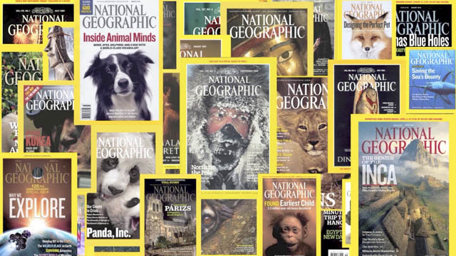
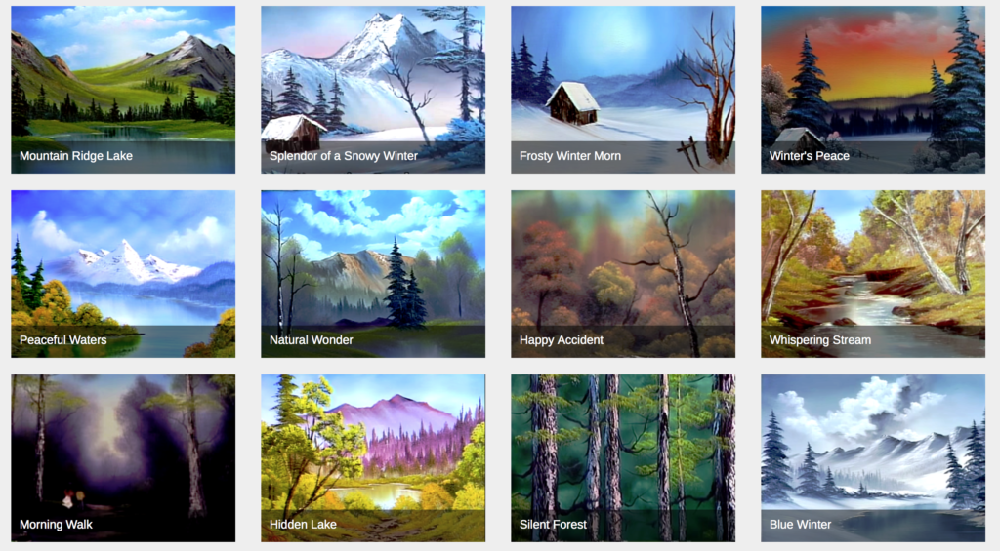

Datasets
Throughout the years I've had to create different datasets for different things. A lot of them are pretty boring, but here's a few that are cool!:
U.S.D.A. Pomological Watercolors

Description: Watercolor collection documenting fruit and nut varieties developed by
growers or introduced by USDA plant explorers around the turn of the 20th century.
National Geographic Magazine Covers
Description: Covers of all National Geographic Magazines, (1960-2018).
Bob Ross Paintings
Description: All Bob Ross paintings (and a few from his son) featured in the TV Show
The Joy of Painting
Skate Video Music
Description: Dataset covering the music used in skateboarding videos from 1989 to
2018. Data scraped from skatevideosite.com